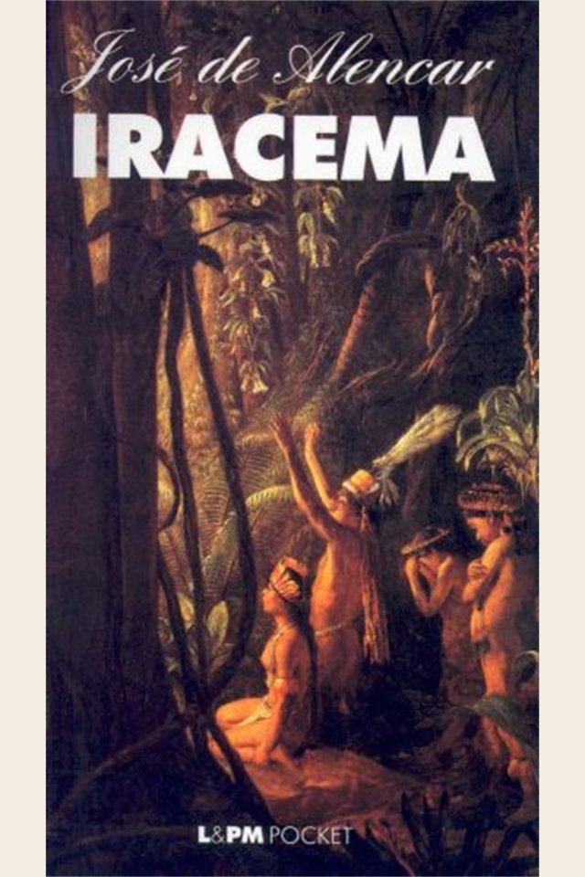

Em uma frase
Iracema, guardiã de sua tribo, apaixona-se pelo português Martim e rompe laços sagrados e comunitários.
Romance indianista que transforma a união entre Iracema e Martim em mito de origem do Ceará. A obra mistura lirismo, idealização da natureza e conflito colonial.

José de Alencar constrói uma narrativa simbólica sobre a formação nacional, vista pelo olhar romântico do século XIX.
Iracema, guardiã de sua tribo, apaixona-se pelo português Martim e rompe laços sagrados e comunitários.
A protagonista é idealizada como figura poética da terra americana, enquanto Martim representa a presença europeia.
O romance valoriza a natureza e o indígena, mas também suaviza a violência histórica da colonização.
O enredo é curto, mas carregado de símbolos: a história amorosa funciona como explicação mítica para uma origem brasileira.
Iracema, jovem tabajara e guardiã do segredo da jurema, encontra Martim, guerreiro português aliado dos pitiguaras. A aproximação entre os dois já nasce marcada pela diferença cultural e pela tensão entre povos inimigos.
Ao se unir a Martim, Iracema rompe obrigações religiosas e familiares. Araquém, seu pai, representa a tradição tabajara; Irapuã, guerreiro da tribo, intensifica o conflito por ciúme e hostilidade ao estrangeiro.
A protagonista abandona sua comunidade e passa a viver ao lado de Martim e Poti. A paisagem cearense acompanha a mudança emocional: natureza, saudade, maternidade e perda aparecem ligados ao destino da personagem.
Iracema dá à luz Moacir, filho de mãe indígena e pai europeu. Enfraquecida e solitária, morre após entregar a criança a Martim. O filho simboliza uma origem mestiça, mas nasce associado à dor e ao sacrifício.
Mais do que figuras realistas, os personagens funcionam como símbolos românticos de cultura, território e conflito.
Protagonista idealizada, ligada à natureza e ao sagrado. Sua trajetória concentra amor, renúncia e sacrifício.
Português aliado dos pitiguaras. Representa a chegada europeia e a formação colonial vista pelo imaginário romântico.
Amigo indígena de Martim, associado à lealdade e à aliança entre portugueses e pitiguaras.
Pai de Iracema e pajé tabajara. Guarda a tradição que a protagonista rompe ao escolher Martim.
Guerreiro tabajara que se opõe ao português e deseja Iracema, acirrando a disputa.
Filho de Iracema e Martim. Seu nascimento simboliza mistura cultural e origem marcada por sofrimento.
No século XIX, após a Independência, escritores buscavam imagens capazes de diferenciar a literatura brasileira da europeia.
O indígena é tratado como herói nacional e símbolo de uma identidade brasileira anterior à colonização portuguesa.
A prosa é marcada por musicalidade, imagens naturais, comparações e tom lendário.
A paisagem não é cenário neutro: ela expressa beleza, pureza, conflito e sentimento.
A obra cria um mito de origem belo, mas não deve ser lida como retrato fiel das relações coloniais.
Iracema expressa nacionalismo literário, valorização da natureza, idealização amorosa e figura indígena elevada à condição de mito.
É uma das obras centrais do indianismo brasileiro e ajudou a fixar uma imagem poética do Ceará e da formação nacional.
O nome Moacir costuma ser interpretado como “filho da dor”, leitura coerente com o tom trágico do desfecho.
Questões costumam relacionar o romance ao indianismo e à construção simbólica da identidade nacional.